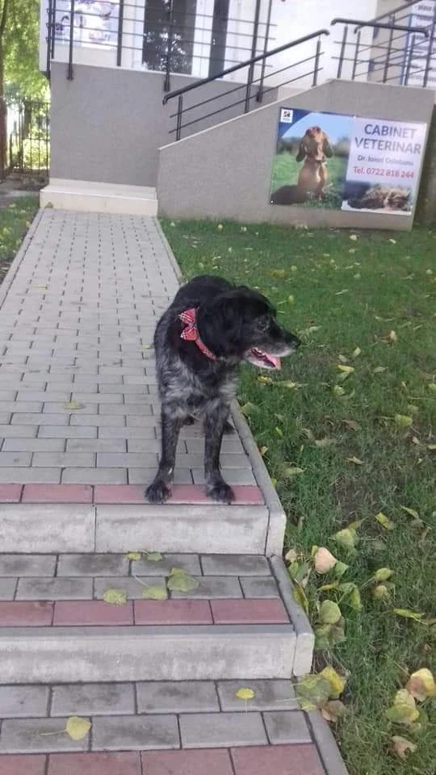
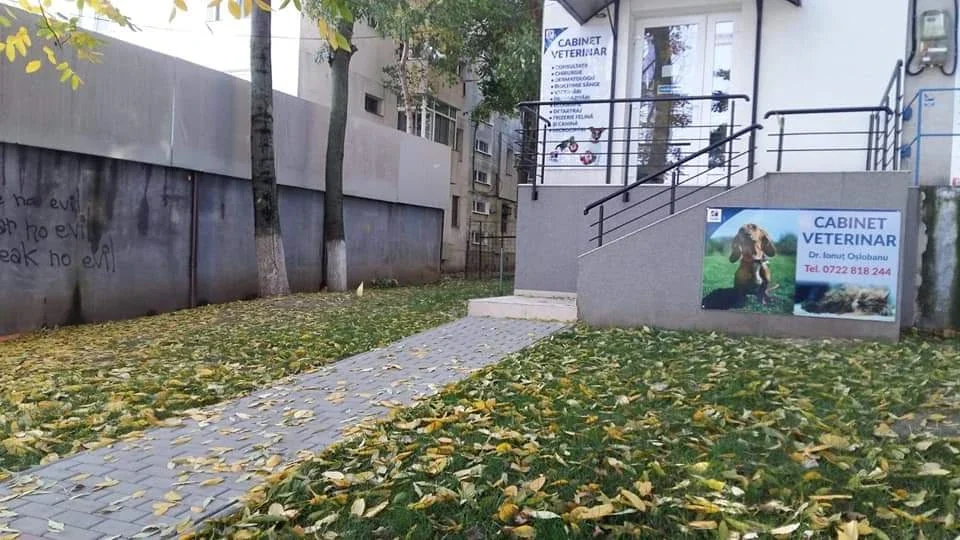

{{Cabinet veterinar · Tătărași, Iași|Veterinary practice · Tătărași, Iași|Consultório veterinário · Tătărași, Iași}}
Veterinary point of care{{Cabinet veterinar la Bloc G6, Strada Vasile Lupu 108A|Veterinary practice at Bloc G6, Strada Vasile Lupu 108A|Consultório veterinário no Bloc G6, Strada Vasile Lupu 108A}}
{{E urgent sau poate aștepta până mâine? Răspunzi la trei întrebări și eticheta îți spune dacă suni acum sau îți faci programare.|Urgent, or can it wait until tomorrow? Answer three questions and the tag tells you whether to call now or book a visit.|É urgente ou pode esperar por amanhã? Responda a três perguntas e a etiqueta diz-lhe se deve ligar já ou marcar consulta.}}

{{triaj în trei întrebări|three-question triage|triagem em três perguntas}}
{{Cât de repede trebuie să ajungă la medic?|How soon does your pet need a vet?|Com que urgência precisa de ir ao veterinário?}}
{{Răspunde de sus în jos. Răspunsurile rup fâșii din etichetă, ca la o etichetă de triaj adevărată. Ce rămâne jos e răspunsul.|Answer from the top down. Each answer tears strips off the tag, like a real triage tag. Whatever is left at the bottom is your answer.|Responda de cima para baixo. A cada resposta, a etiqueta perde tiras, como uma etiqueta de triagem a sério. O que fica em baixo é a resposta.}}
POINT OF CARE
{{Triajul e orientativ și nu înlocuiește consultul. Când ai dubii, sună.|This triage is a rough guide and doesn’t replace an exam. When in doubt, call.|A triagem é orientativa e não substitui a consulta. Na dúvida, ligue.}}
{{servicii|services|serviços}}
{{Ce se face la cabinet|What the practice does|O que se faz no consultório}}
{{Pe scurt, ce poți rezolva aici.|In short, what you can get done here.|Em resumo, o que pode tratar aqui.}}
{{Consultații|Check-ups|Consultas}}
{{Primul pas pentru orice problemă.|The first step for any problem.|O primeiro passo para qualquer problema.}}
{{Chirurgie|Surgery|Cirurgia}}
{{Intervențiile se stabilesc după consult.|Procedures are planned after an exam.|As intervenções marcam-se após a consulta.}}
{{Dermatologie|Dermatology|Dermatologia}}
{{Piele, blană, mâncărimi.|Skin, coat, itching.|Pele, pelo, comichão.}}
{{Vaccinări|Vaccinations|Vacinação}}
{{Adu carnetul, dacă îl are.|Bring the health book, if there is one.|Traga o boletim, se tiver.}}
{{Detartraj|Dental scaling|Destartarização}}
{{Curățarea tartrului de pe dinți.|Removing tartar from the teeth.|Remoção do tártaro dos dentes.}}
{{Frizerie felină și canină|Cat and dog grooming|Tosquia de gatos e cães}}
{{Tuns pentru pisici și câini.|Clipping for cats and dogs.|Tosquia para gatos e cães.}}
{{prețuri: de confirmat|prices: to be confirmed|preços: a confirmar}} {{Pentru alte servicii, întreabă la telefon.|For anything else, ask on the phone.|Para outros serviços, pergunte ao telefone.}}
{{eticheta verde|green tag|etiqueta verde}}
{{Cere o programare|Request an appointment|Pedir uma marcação}}
{{Completezi, verifici mesajul și îl trimiți prin SMS sau WhatsApp. Cabinetul îți confirmă ora.|Fill it in, check the message and send it by text or WhatsApp. The practice confirms the time.|Preencha, confira a mensagem e envie por SMS ou WhatsApp. O consultório confirma a hora.}}
{{Mesajul tău|Your message|A sua mensagem}}
{{unde suntem|find us|onde estamos}}
{{Urci scările de lângă afișul cu câinele|Take the steps by the poster with the dog|Suba as escadas junto ao cartaz com o cão}}
{{Bloc G6, Strada Vasile Lupu 108A. Aleea pavată duce direct la intrare.|Bloc G6, Strada Vasile Lupu 108A. The paved path leads straight to the door.|Bloc G6, Strada Vasile Lupu 108A. O caminho calcetado leva direto à porta.}}

Bloc G6, Strada Vasile Lupu 108A
700344 Iași
{{Cod Plus: 5J59+HC Iași|Plus Code: 5J59+HC Iași|Plus Code: 5J59+HC Iași}}
{{Program|Opening hours|Horário}}
{{Deschide în Google Maps|Open in Google Maps|Abrir no Google Maps}}